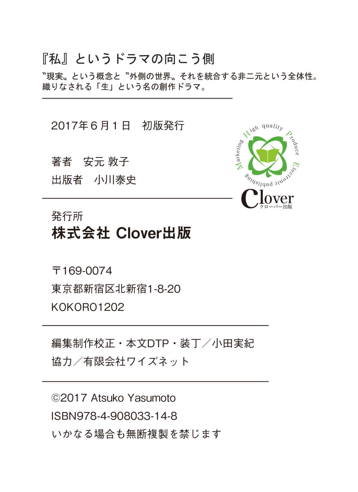

| 『私』というドラマの向こう側 ―― 「新」スピリチュアル読本: "現実"という概念と"外側の世界" それを統合する非二元という全体性。 織りなされる「生」という名の創作ドラマ。 | |
| 安元 敦子 | |
| Clover出版 (2017) | |
目次
【はじめに】
私達が〝現実〟と呼ぶものは、何を指しているのかと改めて考えてみます。何が〝現実〟で何が非現実、そしてその境目はどこにあるのでしょう。
目に見えるか見えないかだとしても、電気や電波、空気、風など目には見えないが万人が疑うことなく社会に浸透しているものもたくさんあります。しかしこれらも人間が考えだした計りで計測出来得るため見えるとみなし〝現実〟に含まれるのではないでしょうか。
誰かが見た、経験した、証明した、多くの人が賛同した......。
スペースシャトルが宇宙空間を飛んでいるのは〝現実〟で宇宙人は非現実ですが、宇宙人が白昼堂々とその辺りをうろつくようになれば、それは人間にとっての〝現実〟となるのです。
こう考えていくと、〝現実〟は人間が手前勝手に創りあげているように思えませんか。さらに細かく見ていくと人それぞれの感じ方で〝現実〟は違うようにも思えます。
つまり〝現実〟の定義はどこに視点を置くかによって変わってくるということです。私達は動かせない現実の中にいるのではなく、私達の中に現実があるのだと考えられませんか。
私はある体験を境に、この世界はただあるがままの自然と、人間が創り出している前述の〝現実〟が織りなす二重構造だと感じるようになりました。極端に言うと〝現実〟は概念です。概念とは考えによって創られたもの──。
そうなると現実の中で織りなす人生も創作されたもの、例えていうなら脚本、ドラマなのです。
「そんな安直なものじゃない！」とお思いでしょうか。
そのとおり安直なものではありません。創られたドラマの中には大いなる体験があります。体験により何かが進化するための壮大なプロジェクトだと思われます。これは私達の頭では永遠に計り知れません。
ある時、私にその創られたドラマの外側の世界を垣間みるような出来事が起こりました。人生ドラマの外側は限りなく平和で静謐な場所が、ただそのままに存在し、息づいているだけでした。
本書は私の体験をもとに、概念である〝現実〟と〝現実の外側〟の世界とは何か、人生はなぜ創作ドラマなのか、時間について、二重構造を統合している非二元という全体性について、思考や感情について述べてみると共に、創作ドラマを生み出す人間で在ることの素晴らしさ、創作ドラマを輝かせる生命エネルギーとしての生き方までを書いてみたいと思っています。
それは時に概念の外側を表現することにもなるため、言葉にすると非常に難解なものとなり、私にとっては表現への挑戦でもあります。伝えようという思いをはずして、ただ感じるままに文字にしていこうと思っています。今私が感じている生命や人間への感動をただ言葉に乗せることで、読んでいただいた方への何らかのエネルギー伝達となって、心に届けば幸いです。
第一章 経緯 ～人生は一本道を行く冒険なのか～
【在るのかないのか】
スピリチュアルという言葉が一般的に使われて久しいですが、ひとことでスピリチュアルと言っても、占いから神話や寓話、幽霊、生まれ変わり、前世、天使や神様、引き寄せの法則からあらゆる宗教にいたるまで、様々な範囲が入ることと思います。
どれがどうではなく、すべてひっくるめて〝在る〟と〝ない〟の両方だというのが私の考えです。
誰かが在るのだという以上、在るのです。
しかし、ないという選択をすることも出来ます。するとそれらは在りません。
「私は水瓶座。水瓶座は元々こういう性質だから仕方ないのよねぇ」
昔、私は占いが好きで自分分析、他人分析をやまほどやりました。
振り返ると自分とは誰なのかを知りたくて分析していたわけですが、占いを選択することで水瓶座である自分というものを創りだしていたとも言えます。
〝私の辞書〟に占いがなければ水瓶座の私は存在しないのです。
天使はいるのだと思うことで天使は存在するのと同様に。
そうやって自分を、自分の世界に何かを、創りだして生きていくのが人間です。
見えない何かと見える全てはつながっています。
さて私はある体験を境にとても気楽に生きるようになりました。体験はひとことでいうとスピリチュアルも現実の生活も吹っ飛んでしまうような目から鱗が落ちるものでした。
言葉にすれば、それらは全部うそ、全部ない。
しかしひっくり返すと、全部創れるし、全部大切なものとなることも後に感じました。〝ない〟し、〝在る〟。
これから体験から連なる気づきについて記したいのですが、それには私がどうしてその体験に至ったのか、人生をさかのぼって経緯を話さなければなりません。少しの間、おつきあいください。
【人生という一本道】
私が幼い頃、大好きな父は夕食のテーブルを囲んでいろいろな話を聞かせてくれました。なかでもとくに印象に残っているのは話の端々にでてきた『人生』という言葉です。
時代劇が好きな父は「徳川家康公は人生を『人の一生は重荷を負うて、遠き道を行くがごとし、急ぐべからず』と言ってね......」などと晩酌の盃を片手に語り始めます。
その後にどんな話が続いていたのかは忘れてしまいましたが、幼い私の頭に、生きることについて、一本の長い道をずっと歩いていくイメージを焼き付けたのは確かです。
また別の機会に父は「人生は冒険だ」とも言いました。「お父さんは若い頃に船乗りになりたかった、七つの海を渡る冒険をしたかったのだけどなぁ」
その時の話の続きは覚えています。「お前は大きくなったら何になりたいの？ それに向かって頑張らなきゃね」
七つの海を渡りたかった父は、戦争が始まって船乗りにはなれず、その後コツコツと同じ場所で会計士として働き家族を守り続けてくれました。
結果的に堅実な会社員となった父と同じく堅実な看護師という職業を持つ母との間でひとり娘として育った私。冒険物語が好きで夢見がち、空想ばかりをする少女時代、学生時代を過ごします。
父の訓話の影響か、描いた夢まで歩いていくんだ、道を進むのだ、いつかこの街を出てもっと遠いところへいかなくちゃ！ と自然と思うようになっていました。どこかで両親のようなどこにも向かわない堅実な生活は人生ではないと思っていたように思います。
大きくなったらこうなろう。大学生になったらこうしよう。何歳になったら、何年後には......。
目の前に道が長く見えていました。私は目の前にどこまでも続く長い道を見ていました。人生は一本道をゴールに向かって進む冒険のように思えていました。
【そうは上手くいかない】
「君達がこれから船出する大学や社会という海には、様々な困難の波が待ち受けていることもあるかもしれません」
高校の卒業式、校長先生が祝辞で述べるとおり、誰の人生にも多かれ少なかれ様々な難関が待ち受けています。難関を乗り越え頑張って進んでいくようにエールを送られるのが人生です。
人生は一本道を行く冒険です。
私の一本道にはすぐに想定外のハプニングが起きました。
大学受験の失敗です。父とは違い教育熱心で、しつけにも厳しかった母と進路に関する考え方の違いでぶつかり、私は精神的にバランスを崩し受験は惨敗。人生初の挫折を味わったのです。道の先が真っ暗で見えなくなりました。
希望していた進路ではなかったものの、何とか滑り込みで入った短大を卒業し企業に就職出来た私は実家を出ての一人暮らし。
さあ自由だ、これから何を目指そうか。
一本道が再びまっすぐ目の前に伸びていました。
私は未来へ目を向けて進んでいきます。
やがて結婚して子供を産みました。専業主婦をそれなりに楽しみながらもまた夢を描こうとした矢先、ハプニングが起きます。
結婚生活が上手くいかず離婚したのです。
しかし今度のハプニングは道を暗くはしませんでした。逆に子供二人といよいよ大冒険です。ただそうそう甘くはない、夢見て生きてはいられません。それでもまっすぐに未来への一本道を見続けて目を離すことはありませんでした。
【心の構造が知りたくて探求が始まる】
人間は〝私に〟ハプニングは起こるはずはないという前提で生きているようです。ところが私のように二十代前半で予想外の挫折、つまりハプニングが二度も起こると、当然のことながら何故私にそれが起こるのかと原因を知りたくなるのです。
「なぜ、私はうまくいかないのかしら。今後こそ上手に進んでいこう」
専業主婦から再び社会復帰し、子育てをしながらも仕事のキャリアをつけていこうと私は懸命に働き勉強もしました。
並行して、人生がうまくいかない理由も知りたくて、占い、カウンセリング、心理学やコーチングのセミナーなども積極的に参加し自己啓発に励みました。
会社という組織は、様々な人間関係の中で業務を遂行していく場であるため、心理学で学んだことを活かすには絶好の実験場です。私が身を置いたＩＴ開発やＷＥＢ制作業界の人は皆、志高く刺激のある現場でした。いい仕事を創り上げようと集った仕事仲間との関係、クライアントとの関係など、人との関係性は個人的なスキル以上に重要な働きをするものでした。その中で私は、時に人と何度もぶつかり、その度に自分と対峙し、コミュニケーションも上手くなっていったと思います。心の学びは私に迎え撃つ力を与えてくれました。厳しい場面も多々ありましたが、探求することは自分を成長させることに繋がるようで、頼もしくもあったように感じます。
もちろん子育てや恋愛などプライベートでも同じでした。
私は心理学だけに留まらず、前世療法やヒーリング、スピリチュアルな分野への探求にものめり込んでいきました。
【探求が終わらない】
やがて私は仕事もある程度専門的な分野でやれるようになり、再婚し、子供たちは成長し、とても安定した暮らしになっていきます。学びは嵩じて心理カウンセラーの資格もとることが出来ました。
振り返ると過去の自分は別人のように思えます。家庭も人間関係も上手くやれていたし、将来的にやりたい仕事も明確になっていました。
ところが一本道はまだ目の前にありました。変わらぬ長さのイメージで遠くまで伸びているのです。そして私の探求は続いていました。常にもっと深く知りたいのです。人生とは何なのか、どうすればこの道をもっと先に進めるのかを。
〝いつもどこかを目指している〟という感覚からいつまでたっても抜けきれない自分がいました。
私はどこへ行きたいのだろう。人生は一本道を行く冒険です。
当時私は主人の転勤で東京から大阪へ越していました。子供達は大学へ進学したり就職したり、私は多忙だった制作業界を抜けて、これからはやりたいことをやるため自分の時間を大事にしようと定時であがれる仕事に就いていました。
ところがまたもやハプニングが起こり始めたのです。
職場の理解し合えない者同士の陰湿な馬鹿馬鹿しい人間関係の揉め事でした。いろんな職場でよくある話、何度も経験してきた、学んできた、自己も見つめてきた、卒業したと思っていた。どうしてこのような場にまた身をおいているのだろう。私の変容はここまできたのに、いったいさらに何を学べと言われているのか。
一本道を進めど進めど目指すゴールは見えません。自己を見つめ、学び、変容しても何かループが止みません。
限界だと思いました。
『ハプニングが起こる→あがく→求める→学ぶ→視点が変わる→楽になる』
そうしてまた『......ハプニングが起こる→......』の繰り返しです。
探求が終わらない。
道は常に目の前にある。
どんな心理学もスピリチュアルな法則もこの探求が止まない限りループが続くような気がしていました。いつもどこかを目指さねばならない自分に疲れ果て力尽きたような気持ちでした。
私は何かのエッジ（果て）に来たと感じました。ここから抜け出す方法がわからないのです。卵の殻を内側から叩くような思い、誰かここから出してくれ。殻は割れるのか、エッジ（果て）から抜ける方法があるのか全くわかりません。
【一瞬でひっくり返ったある体験】
当時、私が興味を持ち触れていたのは、いわゆる悟りや覚醒についての情報です。
ワンネス、宇宙はたったひとつのものから出来ている。分離をして出来たのが私達。私は東京にいた時から好んでそういった情報を発信している方のセミナーやお話会に参加していました。自らが悟りたいなどといった気持ちではなく、ただ単純に彼らの話が面白く感じられたからです。ものの見方が新鮮で、私を日常から少し離れた場所へ連れて行ってくれたのです。
それらの中に京都で活動されている方がいました。
濱田浩朱さんと高田なずなさんというお二人です。この方々なら、今の私の苦しい状況に対していいアドバイスをくださるかもしれない。
思いきって個人セッションをお願いし会いに行ったのです。
２０１３年７月７日の七夕の日、祇園祭りのまっただ中の京都は沢山の人でごった返しています。京都駅に隣接するホテルのラウンジでお話をしました。満席で周りの席にも人がたくさんいました。私は苦しい心情、もう限界だということを、職場環境を解決したい訳ではなく自分自身の探求の限界なのだということを切々と伝えました。
濱田さんはよくよく聴いて下さった後、全く関係のない話をし始めました。
とある不良少年の話です。
その不良少年は、いつも「俺の何がわかる。おまえらに何がわかるんだ」といきがっていたそうです。ところが、彼はある日ふと気づきます。
俺を理解出来ないおまえらこそ悪者だと責めていた他人と自分は同じ穴のムジナなのだと。そのようなお話でした。
さらに濱田さんは次のようなお話をしてくださいました。
外を変えようとしても何も変わりません。
また、自分を変えたいというのも、一見外ではなく内面に向いているようであるが、どうにかしようとしている時点で実は外を変えようとしていることと同じなのです。
そうは言っても自分を変えようという意識はある段階までは必要でしょう。しかしいつか切り離さなきゃいけなくなります、それはどういう時かというと、いつまでやっていてもダメかと気づく時です。
自己変容の過程は終わらないと私は気づいていましたが、
自己変容のさらに先にどんな抜け道があるのか想像が出来ませんでした。
それから濱田さんは話を変えて、身体に意識を向けてみましょうか、とおっしゃいました。
目の前の水を飲んでみましょう。
全神経をその瞬間に置いて下さい、コップを持つ手の感覚、それを口元まで持ってくる腕が動く感じ、コップの飲み口が唇にあたる感じ、水が口の中に入って舌の上をすべって、ぐっと飲み込むと喉の奥に落ちていく感覚......。
私はそのとおりにやってみました。
「いま、何か問題がありましたか」と聞かれました。
その時です。
全く初めての感覚がやってきました。
いまここにあるのはその感覚だけ。目に映るものはすべて風景でした。目の前の彼らも、後ろの雑踏も、まるで画面の向こうのような、ただ流れている無声映画のように見えます。何の問題もなく、思考は止まり、声は、聴こえてくる声はどこかのスピーカーから流れてくる音楽のように意味なく響きます。
私は「あれ？ これは何ですか」と尋ねました。
すると、その自分の声さえもどこからきたのかわからない、誰がそう言っているのだろうと思えるのです。
「あれ？ これは誰がそう言っているのですか」とまた誰かが言いました。
世界は、ただそのように今在る風景だけでした。
何の問題も時間さえも感じさせません。
全てが大きな映画のスクリーンの中に見えました。
私もどこにいるのかわかりませんでした。
この身体は......。いや身体もその風景の一部として在るだけでした。
その中に私という者などいませんでした。
ただ目の前の風景がそのようにあるがままに在るだけでした。
苦しみもありません。
嘘のように楽になりました。気が楽になったのです。
本当に一瞬で気持ちがひっくり返ったのです。魔法のように。
ただそのように在るだけの風景。
それは、今この瞬間 そのものだったのです。
ひっくり返すと、これまで私が苦しんでいた場所やエッジだと思っていた場所は、今ではないどこか、頭の中で創り出されたドラマの脚本のようなものの中だったのだと後にわかりました。
エッジ（果て）などなく在るのは無限。
今この瞬間は無限。始まりも終わりもありません。
翌日、まったく同じ環境に身をおいても、何の問題もなく、苦しさもなく、あんなに嫌だと思っていた周りの人は皆、有り難い人達に変わりました。何が有り難いかというと、今私を取り囲む人達、環境すべてがあったからこそ、この気づきに至ったという有り難さです。
隣がワルなら私だって所詮同じ穴のムジナでしかありません。そう笑える自分がいました。あの不良少年の話を思いだしました。
全ての完璧さに感謝だけが残りました。
進むべき一本道など最初からなかったのです。
人生は時間という一本道を進む冒険というのは概念であり、ハプニングも自己変容もこの概念の中で起こっていたことだと直観的に腑に落ちました。概念が抜け落ちた目の前の風景には何の問題もありません。いまという瞬間を体感することで現れる、ただそのように在る風景です。
私の身体もその風景の中にただ静かに息づいて在るだけで、全ては完璧なのだという大きな気づきが体感と共に起こったのです。体感したというのは後にそう言葉付けしただけで、この時私の身体は風景の一部になっていたため、正確には体感をした者はおらず、気づいた者は誰なのか、私はどこにいるのかさえもわからないような感じです。
第二章 人生とは何か
【身体に意識を向けると現れる風景】
京都での体験以来、悟りや覚醒の情報がとても理解出来るようになりました。大きな変化や素晴らしく特別な何かでもない、見ている世界が終わるわけでもありません。
悟りという言葉にはとても大げさな、普通の人は辿り着けない境地のイメージがあり、あの体験は何だったのだろうと最初は戸惑いましたが、それらに関する本や動画を見ると以前とは格段の差で共感出来たことから、どうやら気づきが起こったのだとわかりました。
私の場合は、京都での体験からしばらくの間、身体の感覚に意識を持っていくと、すぐに今という瞬間が現れていました。
今という瞬間が現れるとは何とも不可解な表現ですが、言葉にすることがとても難解です。感覚としては今五感で感じられる目の前の風景、ただそのように在る風景以外は何も無い。と、言い切る以外表現方法が見つかりません。
状況はひとつも変わらないけれど、それがあることで、不思議な軽さや気楽さがやってきます。ただそのように在る風景には、怖れ、不安、がいっさいなく、そもそもそういった考えや感情を持つ者（私）がいないのです。
言ってみれば、私の身体も含めた風景 です。周りの人も風景です。
つまり、今この瞬間には何も問題はなく完璧な世界が広がっています。
すべての出来事もただ起きているという完璧さがあります。例えるなら海に波が来るといったそれです。波はただ来るのです。
もちろん、職場で話しかけられて会話をし、冗談を交わしたり、仕事をしたりする時は、ただそのように在る風景は現れません。
私は人生ドラマの脚本の中に入ってしまうからです。
私はいつも通り一人の私という個として行動していますが、以前と違うのはどこかで平和であり、目の前で起こることを気楽に受けとめています。意識してそうしているのではなく、何か根底から気楽なのです。
後に何かに似ているなぁと思いだしたのが、初めて子供を産んだ時に同じような感覚の体験があったように思います。
自分の身体の中から赤ちゃんがでてきて、にわかに信じられない夢のような気持ちでした。出産した翌朝、少し眠って目が覚めた時、あれは夢だったのではないかとはっとして、赤ちゃんがちゃんと隣にいることがわかると例えようのない静かな幸せを感じました、その瞬間と似ています。赤ちゃんとの暮らしもやがて慣れてその瞬間に感じたものは無くなっていきましたが。
【二つの側面】
ふいに現れた〝ただそのように在る風景〟と〝私という自覚を持って過ごしている日常生活〟。まるでコインの表の裏ように思えました。二つはぴったりとくっついてどちらも確かに存在しています。いったいこの二つの現象は何なのでしょうか。
私はしばらくすると〝私という自覚を持って過ごす生活〟へどんどん飲み込まれていきました。ただそのように在る風景はしばらく現れてくれなくなりました。
ただ身体には何だかすごい秘密があるような気がしていました。
そうしてハプニングが起こっていた職場も再び主人の転勤により去ることとなり、また新たな環境で今度はただ気が向くままにスピリチュアルな情報にも興じました。
しかしどこかで本当は何もないのではないかと、ただ風景の中に生息しているだけで、スピリチュアルな情報もあらゆる人間の悩みも出来事もないのではないかと思っていたのです。
そして二年が経ち、再び覚醒者の本や動画などの情報に触れていた時、また私は身体の感覚からただそのように在る風景が現れるようになりました。二年前にはいまひとつ不可解だったことも、ぽろっと腑に落ちることも多く、気楽な気分が始まりました。
今度は、いつでもその風景は側に在るという以前よりも安定した感覚です。
身体を使う──見る、聴く、触ることは常であり、ただそのように在る風景は、その常に寄り添うものでした。
ただもうひとつ、二年前には感じなかったことがあります。
ただそのように在る風景が完璧であるのと全く同じように〝私という自覚を持って過ごす生活〟、つまり人間ドラマの脚本もやはり在るのです。それはこの風景の中に在る人間がさらにその中で創る一期一会の体験であり、たとえばスピリチュアルな情報さえも完璧な体験のひとつなのです。
二つの側面はどちらも同等な何か大きな同じものなのだと私達はどこかで知っています。ここで言う私達とは個ではなくきっと大きな何かそのものです。
私が二年前には感じ得なかったもの、それは人間ドラマへの愛おしさと感謝でした。さてここからは、個の私が感じていることをお話ししていきたいと思います。
【身体に人生はない】
どうして身体の感覚に意識を向けると、ただそのように在る風景が現れるのか。
頭と身体。
通常、私達はそのほとんどを頭の中で過ごしています。
朝起きた瞬間から、顔を洗おう、朝食を摂ろう、学校へまたは会社へ行こう。
人と会えば会話を生み出し、仕事をし、また家へ帰る。
これらを実際に行なっているのはもちろん身体ですが、あまりにも身体に馴染みすぎてほとんど無意識に動かしています。身体がその行動に向かっている時には、もう次のことを頭に浮かべているのが常ではありませんか。
普段の生活において、身体のことを〝頭で考える〟ことはあっても、意識まるごと身体に持っていくことはやっていないのではないでしょうか。
私達は頭の中の世界で生きてしまっています。
頭で〝顔を洗おう〟と考えると、自然に身体は顔を洗う行為に向きますが、
その時に何を考えていますか。
「あ、水が冷たいな！ 嫌だ」「肌の汚れはとれたかな」「あー、さっぱりした」
どれも頭の中で繰り広げられている言葉です。
顔を洗いながら、さらに先へ行くこともあるでしょう。
「今日は何を着ていこうかな」などと。
身体に意識を向けるとは、言い換えれば１００％身体で感じること。
実は１００％身体で感じている時、頭で言葉を思考することは出来ません。
例えば顔を洗っている時、蛇口を回す手、指先が蛇口にあたる感触を感じる、水が出てくる時、その音を耳で聴き、両手を合わせる仕草ではその手が動いていることを感じます。水をすくう時、手の平に水が触れる感触を感じ、さらにそれを顔まで持っていく時、また動く腕を感じ、顔の皮膚に水があたる感触を感じる......といった具合。
そして、そう身体が感じている瞬間が今です。
身体は今にしかいないのです。初めから今にしかいませんでした。
明日にいることも昨日にいることも出来ません。
つまり身体は時間を作り出すことが出来ないのです。いつも今この瞬間に何かを感じて息づいています。
ただそのように在る風景はここにあります。
今この瞬間には、ただ顔を洗っている人間という風景があるだけなのです。
それが全てです。過去も未来もありません。
全てなのだという気づきが起きた時、私がこれまで人生だと思っていたものは、すべて身体以外の頭の中で創りだしていた概念、イメージだという気づきも同時に起こります。
もっと言えば、私という存在も頭で作り出した概念です。私はこういう性格だ、私はこのような価値観の人間だ云々。私という個のアイデンティティーは頭で作り出した概念です。ただそのように在る風景に私という個はいません。
気づいた者は私ではなく、ただ気づきが起きたという、言わば現象です。
混乱する表現になりますが、ここが言葉の限界です。
言葉自体が頭で作り出されているので、その外側を表現するのは非常に難しいことだと痛感します。
私がいない、ただそのように在る風景と、私が生きる人生は常に同時に在ります。
コインの表と裏です。
この身体が朽ちるまで、それは同時に在り続けるのだろうと思います。
どちらが嘘で、本当か、どちらが幻で、真実かという論議も意味を成しません。
考えなくていいのです。
ただすでにそうだということです。
つまり私の人生は、頭で脚本が書かれ、脚本どおりにたくさんの個が生まれ、ただそのように在る風景の上に映し出されている映画やドラマのようなもの。生まれた、歳をとった、いろんな出来事があった、ハプニングや自己変容は、放映されているドラマの方なのです。
私という個はドラマの役者。人生は創りだされたドラマなのです。
【身体に時間はない】
さて人間ドラマは大変です。様々なことが起きるし、その度に頭を悩ませ対処しなければなりません。
なるべくのほほんとあの平和を感じていたいが為に、私は普段から身体に意識を向けた暮らしを心がけるようになりました。
人間ドラマと違って平和なただそのように在る風景は、五感の側にぴったりと寄り添っています。身体を使ってその世界に溶け込んでいたいのです。
料理をする時、掃除をする時、アイロンをかける時、歩く時。
また時には、聴こえる音をただ耳で拾う、そしてまたは鼻から出たり入ったりする息やそれに合わせてかすかに動く胸筋を感じてみる、などです。
仕事の時は思い切り身体から離れて思考しますが、合間にふとパソコンのキーボードに触れている指先に意識を向けることもあります。
そうやって身体の感覚を感じる暮らしをするようになった時、
気がついたことがあります。
時間についてです。
人生と同じく時間もまた概念です。
身体がいる場所は、いつでも今です。身体は過去や未来に行くことは出来ません。いま、いま、いまという点の連続です。
点がつながり線となって移動している？ これもイメージでしかありません。
点はつながっていません。
点は、点です。いまは、いまなのです。そこに因果関係はないのです。
因果関係は頭が創りだしたイメージ、人生ドラマの脚本です。
不思議なことに、今身体が向かっているものに意識を集中して事を行なうと、かならず、設定した時間どおりに終わるということが頻繁に起きます。
例えば、午前９時までに目的の場所に着かなければならないとします。
しかし準備をして家を出るまで、あまり時間がないと考えている時、時間ばかりを気にして、時計チラチラで身支度をするよりも、「９時には着こう」と一度だけ決めて、あとはひたすら身体が行なっている目の前の準備をひとつずつ丁寧に行なっていくのです。途中の電車の乗り換えがやけにスムーズだったり、バス停についたとたんにバスが滑り込んできたりして、まるで宇宙の応援を受けているような流れが出来て、結果９時に着きます。
因果はありません。今を意識すると今という点が出来、こう成ると決めると成ったという点が出来て、点から点へ導かれるだけなのです。
時間はありません。
理論めいたことではなく、そう出来ているようです。体験を繰り返すと理由なくそうであることが腑におちてきます。
ドラマの脚本を書いているのは私なので、９時に着くと書けば（決めれば）、着いた場面が現れるのでしょう。
とにもかくにも身体がいる場所に時間はありません。
【老いではなく変化】
身体には時間がないとすれば、どうして老いていくのでしょう。私達は歳をとったから身体は老いると当たり前のように思ってきました。
時間とは関係なく、ただそのように在る風景の中のものはすべて変化しています。動き続けています。時間の上を動いているのではありません。
全てはいまここで変化を繰り返しているのです。
老いとは時間の中にあります。つまり若さも老いも人間が創り出した概念です。時間という概念が生まれた時、同時に時間と共に変化するというストーリーが生まれたわけです。
しかし変化はただの動きです。時間がなければ動かないなんていうものではありません。
時間に関係なく走るし、時間に関係なく風は吹きます。
私達は動いています。変化しています。
細胞は、寄せてはかえす波のように動いているのでしょう。
空の星は止まっていません。常に動いています。
人間の身体も常に動いています。ただ動いているのです。動きは変化です。
こんな風に感じたことはありませんか？
気分は小学生の頃とおんなじだ!!
一週間が早いなぁ。
あれからもう30 年も経ったなんて！
頭で創り出した時間の動きですから、早く感じるも遅く感じるも個人の自由なのです。勝手にそう思い込んでいるだけ。つまり若かった、老いた、というドラマの中のストーリーなので、テレビドラマと同じく、頭の中という撮影スタジオで一瞬にして時と場所が変わることもあるわけです。
時間と身体は別ものです。
身体はただ変化しています。
気分はあれこれ忙しくやってきたり去っていったり。
身体に時間はありません。
樹木が動くことなく同じ場所で枝が伸びて花が咲き実がなるのと同じように、人間の身体も常に細胞が動いている状態に在るわけです。
【人生が創られた幻だとしても虚しさはない】
人生は頭の中で創りだされた物語、ドラマです。
いや明確に言えば人間が創り出したものではなく、人間もドラマの中の役者として創り出されている側です。（ここについては次章以降で述べていきます）
だからといって作りものだよ、偽ものだよということではありません。
ただそのように在る風景の中で繰り広げられる幻影のようだと思うと、儚く虚しく感じられて価値さえもないと捉えがちですが、例えば私達が目にする映画やドラマや舞台演劇に小説に価値はないでしょうか。
おばあちゃんが枕元で話してくれる言い伝えや物語に価値はないでしょうか。
大地を蹴って表現する歌や踊りに価値はないでしょうか。
文化や芸術に限らず、私達人間が創り出した全ての創造物がなかったとしたら......
味気ないどころではありません。
同じように、ただそのようにある風景の中に人間の人生ドラマがなかったとしたら......！
私達宇宙を創り出した誰かは全てに価値をおいていたに違いありません。
【全体のひとつなるもの──まるで楽曲のようなもの】
身体が感じている今この瞬間にあるただそのように在る風景と、頭が創り出している人生ドラマ。これらの二つの側面を含む全体という考え方があります。
非二元や、アドヴァイタ、ひとつなるものとも呼ばれます。二つではないという意味です。
ただそのように在る風景の中に、紡ぎだす私達の人生というドラマ、私はこの二つを合わせたものをひとつなるものと捉えています。
音楽を聴いていた時にふと思ったことがあります。
幼い頃から物語と共に音楽がとても好きでした。小学生の時に、ピアノを習いはじめ、音楽の授業ではアコーディオンを弾いたり、小太鼓を叩いたりしてみんなで音を合わせていく感覚がとても楽しく、合唱もソプラノとアルトが重なりあうハーモニーの美しさに歌いながら何度も鳥肌がたったものです。
音が在るのは今です。音は今この瞬間に在ります。
人が音楽に惹かれるのは無意識に今の平和さに居続けることが出来るからかもしれません。
今この瞬間には、悩みも不安も怖れもいることは出来ません。
ただただ静かな平和があるだけ、ただそのように在る風景があるだけです。
私はＣＤが創られる専門的な過程に詳しいわけではありませんが、音楽制作に『ミックス』『ミキシング』という用語があります。複数の音源を重ね合わせてひとつの音源にするというものですが、一般的なＣＤは、ライブの音源以外、楽器単体の音をそれぞれ録音したものをエンジニアが音を調整しながらひとつひとつを重ね合わせて一楽曲が作られているようです。全体のひとつなるものとはこの最終的な楽曲として出来上がったＣＤのようなものだと私は今感じています。
ただし永遠に鳴り止まない楽曲ですね。
今この瞬間にただそのように在る風景、これを大きく宇宙全体として捉えます。宇宙のさらに銀河系の中の地球の中の風や空や木や花、鳥、動物、人間に至るまで細かく現れている風景です。
例えば、音楽が創られる時、最初にドラムがリズムを刻み、重ねてベースが弾け始め、その上にギターの弦が鳴り、ピアノがメロディーを重ねて、音楽の全体像が現れます。全て音なので今この瞬間に現れています。
同じように、真っ暗な宇宙に星が輝き、銀河系が創られてくるくると廻り始め、地球が顕われ、水をたたえ、木々が茂り、花が咲き、鳥が鳴き、やがて人間が現れて、今私達が生きて目にしている風景が出来上がります。（誰がという主語ははぶきます。ただそう創られるという事実だけがあります）
それらは常に変化をしています。
まるでドラムがリズムを刻むように、ギターの弦が震えるように、ピアノがメロディーを奏でるように、ただ時間のない宇宙という空間がうごめいています。永遠に現れてはただそのように在ります。
そうして出来上がった音源、すなわちただそうで在る風景にはまだ時間というものは存在しません。ただ今この瞬間に在るだけです。
音楽のミキシングの最後には、ボーカルが歌う詩をのせます。
そのとたんに現れるのがストーリーです。楽曲には恋の歌、戦いの歌、友情の歌、などといったイメージが出来る世界観が生まれるでしょう。
同じように、宇宙という風景の中に人間の脳が創りだした『言葉』が現れた時、人生が現れます。ドラマが生まれます。世界が出来てきます。私という個が生まれます。あなたという個も生まれます。同時に時間も生まれます。
宇宙空間に言葉というエネルギーがミキシングされた（重ねられた）のです。あらゆる出来事は、最後の最後に重ねられたこの詩により複雑に絡み合い、私達人間に体験を呼び起こします。
非二元、アドヴァイタ、ひとつなるもの、ワンネス、様々な言い方がありますが、今この瞬間のただそのように在る風景という側面と人生ドラマという側面は、合わせてひとつの鳴り止まない宇宙の楽曲として創りあげられたそのもの、またはそれらを創りあげた何かを指して全体性と呼ぶのだと感じます。
気づきが起きていようがいまいが、すでに私達は両方の側面に存在している何かです。
歌の世界観があまりにも美しすぎて没頭し、全体であることは忘れてしまったのでしょう。
第三章 エネルギーと思考
【何が変化しつづけているのか】
身体がいる今という瞬間で、何が動き変化しつづけているのでしょう。
身体の感覚に意識を置く、つまり考えずに感じる暮らしをしていると波があることに気づきました。何の波かというと気分の波です。考えにまみれていた時には流れのある波だとは気づかずにその時その時に大慌てしていたのかもしれません。感じる暮らしは、場の雰囲気や自分が今何を感じているかをどんどん敏感にしていきます。元々、私は興味の向くままにヒーリングやエネルギーワークを学んでいたということもあり、微細な感覚に注意を向けるのは常となっていました。
気分の波は、何もない毎日の中で繰り返されます。
そこに原因や結果という因果関係やとりたててドラマチックな何かがなくとも、どこからともなくいい気分はやってきて、どこからともなく沈んだり、また上がったり、いつも変化しています。
量子物理学の観点では、この宇宙のすべては素粒子で出来ていると言われています。私達の身体も目の前の物も、外の木や花や空も、細かく細分化していくと全ては素粒子という同じものが集まってそれぞれ違う形に見えているだけだということです。
元を正せばみな同じ。素粒子の動きには何も固定された定義がありません。その時に関係するものによって自由自在に変化する、相対する関係性によって動くのです。私がこうして過ごしている時にも常に私という個以外の何かが動いていて、それらの影響が次々と伝わり、その波が来てまた去って私を通りすぎていく。
前章で述べた全体性、全体のひとつなるものが、その名のとおりただぼおんとひとつ在るとすれば、その中でうごめくエネルギーが、固まったり広がったりして様々な気分を生み出しているようです。私の中でとめどなく動く気分の波どころか、全ての事象──ただそのように在る風景も、その上にのっている人生というドラマも、元はこの全体のひとつなるもののエネルギーが動き出して顕われた現象。
それを生命のエネルギーと呼べるのかもしれません。
そして因果関係などない変化を繰り返しています。
お天気を想像するとわかりやすいかもしれません。常に地球を取り囲みまわりつづける大気は、時々で雨になったり風になったり、晴れたり曇ったり、台風が来たり。そこに何が原因でという因果関係は全くありません。いわば気まぐれです。始まりもなければ終わりも在りません。常にプロセスが展開しています。
ここで言う大気が、ぼおんとひとつ在る生命のエネルギー、そして私達が生きている世界のあれこれが雲や台風のようなもの。常に様々な形状として現れているのです。私の身体も、身体が目にするもの全ても。
いつも動いています。変化しています。
今この瞬間瞬間に点として現れては、消えて、また現れるプロセスだけが在ります。いまここの点として現れるプロセスは、起きる出来事、身体の変化、自然や動物の変化だけでなく、私たちの気分（感情）や考え（思考）にさえ及びます。
ただ感じているとそれがわかってきます。
私という個の中で気分や思考が変わり続けているのではありません。
全体のエネルギーが変わり続けているだけです。
台風や大雨のように、どこからか湧き起こっています。
そして私達は時々に都合良く気分や思考をつかまえて自分のものにしているのです。
【思考は個人のものではない】
波があるのはなぜか。
これまで思考や気分は個々人の脳が生み出しているものだと思ってきました。しかしこれもまた頭の中の概念にすぎません。静かに身体の感覚に入り観察していると、気分の波はどこからかやってきていることに気づきます。
起きてくる思考や気分に因果や意味を持たせずに、ただゆだねて感じ続けていると、やってきては何処かへ消えていくのがわかります。身体とはなんの関係もなく、どこからか浮かんできてまた消えていくのです。
ある時、私は紙に書いてある文字をパソコンで電子テキストに起こしていく仕事をしていました。単純な作業で頭は使いません。目でみて指で正確に打ち込んでいけばいいだけです。そのうち気がつくと手を動かしながら頭では全く関係のないことを考えているのです。
ところが指は変わりなく仕事を続けています。
私の身体とは全く関係のないところで、次々と考えだけが浮かび上がっているのです。浮かんでくる考えを観察しました。連想ゲームのように連なっていきますが、全体には何の脈絡もありません。だらだらと浮かんでくるだけです。
そこで意識をパソコンを打つ指に移しました。キーボードを打つ指の感覚に集中しました。さっきまで浮かんできていた考えはすっかり鳴りを潜めてしまいました。
仮に今何かを考えたとします。
何をきっかけに考えたのかと元を探るとその原因がでてきます。それをまたどうして出てきたのかと元をさぐると、そのまた原因が出てきます。
空を見上げた、お天気がいい、洗濯をしよう、そういえば今日から妹が旅行へ行くはず、旅行先のお天気はどうだろうか。旅行と言えば私も昨年はハワイへ行って楽しかったな。あ、そうだハワイと言えば英会話を学びたいな......と連想ゲームのように考えが続きます。
しかしこれを逆さに遡っていくと、
そもそもなぜ空を見上げたのか、テレビでお天気のニュースを見たからだ......という調子。これまた延々と元があります。おおもとのおおもとまで行くと、私が生まれたからだ......なんてところまで遡るはずです。ではなぜ生まれたのか、両親が出会ったからだ......とさらに続きます。つまり考えの源は私には無いのです。
もうひとつここで解ることがあります。
先ほどのパソコンのキーボードを打つ指に意識を戻したら、始まりも終わりもない考えは鳴りを潜めてしまったのでしょうか。指、つまり身体がいるのは今という瞬間だからです。今という瞬間に考え・思考は存在することが出来ないようです。
【思考は言葉】
思考とは言葉です。
言葉は使うことが出来る道具です。
だらだらと湧いてくる思考エネルギーは、逆につかまえて使うことが出来ます。あくまでも人生ドラマの中の私側から観た場合です。ドラマの外から観れば、思考を選択して使っていることさえもただ起きてきている現れでしかないのです。
言葉を使う時、それは自分が起こしているようであり、外から起こってくることでもある。宇宙全体は常にパラドックスです。
私は今とうてい言葉にならない事柄を、言葉という道具を使って書いて表現しようとしています。
この私はドラマの中にいます。しかしドラマの外から見れば、書いているのは誰でしょう。ただ大きな生命のエネルギーが人間を通じて文字を書くという現れとして起きているだけです。
ならば私は思い切りドラマの中の私という役柄に浸り、湧いてくる思考をつかまえて言葉にして遊んでみようと思います。どこまで行っても言葉にしようとする限りそれはイメージである人生ドラマの中のこと。
なぜなら言葉を使う時、今この瞬間にはいないからです。今この瞬間に起きたことを言葉にしたとたんそのものではなくなってしまいます。
言葉と時間は概念です。
ただそのように在る風景に言葉は無いのです。
第四章 感情の問題
【感情はただ現れる】
思考と同じように感情もどこからか現れるものと感じます。たいてい思考によって引き起こってくるようです。これまたお天気と同じです。
ところが、感情は思考以上にやっかいです。
人生ドラマが辛くなるも、反対に歓喜する興奮を味合うも、感情が大きく作用するからです。
今この瞬間には誰もいない、ただそのように在る風景があるだけ。
辛いということも、逆に歓喜といった興奮もありません。
そこにあるのは静かな平和と安らぎ。とりたてて何事もない普段の状態で、大自然の中にいる時の心地よさのような感じでしょうか。
感情はわけもなくやってくることもあります。時に思考をきっかけにやってくることもあります。出来事が起こると、出来事に対して意味付けする思考がやってきて、それに引き連れられて感情もやってきます。
出来事は外から起きてきて、
思考や感情は自分の中から起こしていると考えますが、
前述の思考の始まりが無いのと同じく、起きた出来事も、なぜそれが起きたの？ その理由をひもとくと、別のきっかけになることがあり、そのきっかけがなぜ起きたの？とひもとくと、さらにきっかけがあり......、どんどんどん遡っていくと、初めというものはそもそもない、ということがわかります。
目の前で起きた出来事に、原因を特定することは出来ないのです。
ひとつ言ってしまえば、ただ全体のエネルギーが動いただけ。
例えば、悲しい感情。どうしてこんなに悲しくなるのか？ あの人に辛いことを言われたから、くやしいから。あがいて、あがいて、原因を究明すべくさらなる思考をすればするほど、堂々巡りの無限ループにはまることがあります。もしくは、その辛さを避けようと考える、嫌だ嫌だと考える。
原因がわかったから悲しみが去るのか。いいえ悲しみが去る時は身体で悲しみきった時です。
【感情はエネルギーのひとつの顕われ】
人間の身体は元々の全体のひとつなるエネルギーが収縮したものです。それがひとり一人の分離した個体として現れています。
ゆえに身体の中をつねにエネルギーがめぐっています。それは皮膚の外ともつながって入っては出ていく、呼吸をするように繰り返しているのが常です。
ところが、感情というエネルギーが入ってきた時、我慢をしいてエネルギーを通り抜けさせず、身体の中に留めてしまうことがあります。流れている川の水をせき止めてダムを作るようなものでしょうか。身体の中のダムの水はどこにも供給されないので出口がありません。淀んでいくばかりになります。
【人間関係の問題はダムの吐き出し口】
感情というエネルギーが入ってきた時に、身体の中に溜めてしまう原因は、主に思考で創りだした人生ドラマの中にあります。
ある人は幼い頃にとても厳しい母親に育てられました。
自由に歌いたかったり、走り回ったり、思う存分甘えたりしたいという衝動がやってきても、親はそれはみっともないことだと諭し、おとなしくしていなさいと叱られてその思いは叶いませんでした。
とても悲しかったのだけど、悲しいという思いを我慢して親の言う通りに大人しく過ごしたとします。この親子になったこと、そういった親とのやりとりは、まさしく人生というドラマであり、その中のひとこまです。
さて親に叱られて我慢した自由に歌いたいという衝動とそれが叶えられなかった悲しみ（これがエネルギーです）は、子供の身体の中に滞留します。
やがて、その子が成長し、親ではない誰かと人間関係を結んだとします。
親子で創っていたドラマの脚本とは全く別の脚本のドラマが繰り広げられています。恋人同士かもしれませんし、上司と部下かもしれません。
仮に恋人同士だとすれば、ある時、あなたの言い分と相手の言い分が食い違い、上手くいきません。あなたは自分の言い分を我慢すると同時に、とてつない悲しい気持ちが押し寄せてきて辛くなりました。そして悩みます。こんなに辛く悲しい関係をどう解決しようかと。友人に相談をしたり、何とか相手を説き伏せる策を練り直したりします。
ところが、実はこの時あがってきた悲しい気持ち、辛い気持ちは幼い頃に我慢して身体に閉じ込めてしまった〝あのエネルギー〟なのです。ダムに塞き止められていた水が、ここぞとばかりに出口を見つけて流れ出そうとしているのです。
【感情は感じきればよい】
幼い頃に何らかの人生ドラマで身体に溜めてしまったエネルギーは、後に全く別の事柄をきっかけに身体から出ていこうとします。
この時に湧いてくる怒り、悲しみ、怖れ、不安といったネガティブな気持ちを人はいけないものと判断し、それらと格闘します。それらを消してしまおうとあれこれ悩み、考え、目の前の相手を責めたり説いたりすることもあります。
しかし、一番の解決策は〝ただ感じきること〟なのです。
お天気と同じなので、あがらない雨はない、台風も低気圧に変わります。感じきると、エネルギーはあなたの身体を抜けてどこかへ消えていくのです。
すると不思議なことに、人生ドラマの脚本が変わります。
先の例で言えば、揉めていた恋人の言い分が急に変わったり、嘘のように揉め事が終息するのです。
なぜなら相手も生命のエネルギーの顕われ。揉めている時は言って見れば、どちらも固い氷の状態で融合しようとしていたようなものです。交わることが出来ません。しかし一方のエネルギーが固い氷から水に溶けてしまえば、水の中に入った相手の氷も溶けてしまい、ひとつになれます。自分が変われば相手が変わるとはこのことです。
固い氷となったあなたを溶かす方法はただひとつ、
〝感じる〟こと。
【感じきるとは身体に意識を向けること】
そうはいっても、感じきるとは果たして具体的にどうすればいいのでしょうか。
ここでいう感情を感じきることは、自己憐憫、つまり悲劇のヒロインにひたりきることとは根本的に違います。自己憐憫は心に作ったダムの中に浸っている状態です。エネルギーは塞き止められたままです。悲しいという気持ちと自分自身が一体化しています。気持ちに意識を向けています。
そうではなく、意識を身体に向けるのです。
恋人と意見が合わず、とても悲しく辛い気持ちになった。胸が苦しくて、食事も喉を通らない。胸のどのあたりが苦しいのか、みぞおちのあたりか、のどの奥の方がつまった感覚なのか、あくまでも身体のどの部分が痛いと感じているのかを探ります。感情は思考と違い、必ず身体のどこかに変化を伴い現れます。
みぞおちのあたりが詰まって苦しいとするならば、その部分の詰まった感じに意識を向けて、言葉に出しましょう。「私は今とても悲しいって思っているのね」そして、身体の部分の傷みを感じながら、思い切り「悲しい、とても悲しい」と声に出し、泣いてもかまいません。
転んで膝を擦りむいた時、痛い！ 痛い！ となる、あれとまったく同じです。痛がるしかありませんね。そのうち傷みは退いていきます。
【エネルギーが流れ出すと困った出来事は減っていく】
私はただそのようにある風景が現れるずいぶん以前から、感情についてはこの感じきるということをやっていました。
10 年程前になりますが、当時は会社勤めの傍らタロットを使った占いをやっていて、相談に来る人の気を受けて身体がとてもつらい時期があり、エネルギーヒーリングを受けていました。ワーカー（ヒーリングを施す人）の方から、もともと気に敏感なエネルギー体質な上に、上半身と下半身が分断されているくらい下半身に古いエネルギーを溜め込んでしまっていると言われたことがありました。身体を通り抜けて循環するはずのエネルギーが塞き止められた状態です。
幼い頃の我慢や様々な人生ドラマで溜めてしまったのでしょう。外に出すためにヒーリングを定期的に受けたことと同時に自分でもエネルギーワークを学び、その際に感情を感じきって浄化するということを知ったのです。
きっかけとしては主に夫や子供との間でよくこの溜めた感情がひっぱりだされる出来事が起きていました。
最初は実験的に相手を責めずに自分の身体を通して感情を感じきることをただただ繰り返しました。そうなると、もはや何が起きても誰も責められないのです。すべて自分の中にあったエネルギーが外の出たがっているのだと思うと原因も解決策も出来事や他人にはありません。
不思議なことに、事が起こり辛くなっても場をやり過ごし自分の中で感じきっていくと本当に嘘のように翌日には相手の態度が和らいで、何事もなかったかのように凪がきます。解決したというよりも問題自体が消えて無くなる感じです。
全てが生命のエネルギーであることを体験的に知ってからは、もう出来事に原因と結果というストーリーをあてはめること自体をしなくなり、本当にお天気を観るように、あ、起きた、去った、起きた、去った......となりました。そうして、そのうち真剣に揉めることが少なくなっていきました。
様々な人生ドラマの中で、身体に溜めてきた感情のエネルギーも、こうしてひとつひとつ感じきっていくと、そのうちに人間関係の揉め事が少なくなっていきます。執着やこだわりがなくなっていくため、自然に解決されていくのです。
やがて人生ドラマの脚本は次第にシリアスではなく平和なコメディに変わっていきます。（それではある意味楽しめるドラマにはなりませんね）
第五章 全ては変化のプロセス
【思考と感情をつかまえる私達】
これまで書いてきた通り、思考も感情も全体の生命エネルギーが起こすお天気のようなものです。ところが私達は自分が思考しているものと思い込んでいます。なぜなら思考は言葉だからです。
私達は生まれるとすぐに名前をつけられます。名前によって他人と自分は違うものという認識が起きます。名前をつけるという行為は、そのものに固有の形を与える行為です。
水を固めて氷にするようなもの。ほんとうはひとつの水だったものが、個別の容器に入れられてコロコロと分離した氷を作るようなものでしょうか。それがいいとか悪いとかという見地の話ではありません。ただそういうものだということです。
さて、名前をもらった私達は、自分と他人がいると思いこんで生きていきます。そして全体の生エネルギーであったことを忘れ、全体が起こした思考をつかまえては、これは私の考えだと思います。
思考というエネルギーは連鎖して感情を起こします。
私の考えだと思い込んだ思考から感情というエネルギーが起こり、当然のことながらそれも私の感情だと思い込みます。そうしてどんどん人生を創り上げていきます。そこには複数の名前を持った固体のエネルギーが同じように現れているため、関係性をつくり（家族、友人、恋人など）さらに複雑に人生を創りだすことが出来ます。
これが人生のドラマです。
私達がテレビで見ているドラマは初めに脚本家という創り手がいます。創り手はキャラクターを生み出すのにそれぞれ名前をあてがい、性格や考え方などの特性を考え、相関関係を創り、ストーリーが生まれる、というのと全く同じことが、全体の生命のエネルギーに起きているのです。誰が起こしているのか？ 脚本家とは誰なのか、それは全体の生命のエネルギーそのものです。〝誰が〟という定義さえなく、ただ起きている事実があるだけです。
【時間軸にのせると出来てくる人生ドラマのストーリー】
全体の生命のエネルギーがただ起こしてくる思考や感情を、名前をつけた人間という生命体ひとりひとりに持たせることで、キャラクターが出来上がります。
そこにさらに時間という概念をあてがうとどうなるか。
ランダムに存在していた固有の生命体が、年齢別に整理されて、その時間帯によって体験することが決まってきては、家族が出来、社会が出来、どんどん分離の単位が増えて、さらに複雑に関係性が創りだされ、遂にはストーリーが生まれます。
これが人生ドラマです。
【人生ドラマは言葉】
そういう意味においては、突き詰めれば人生とは言葉によって創られるとも言えます。なぜなら名前をはじめとする人間の成り立ち全てが言葉だからです。
聖書にある『はじめに言葉在りき』が指しているように思います。頭の中の思考ももちろん言葉です。そういえばドラマや映画の脚本もセリフ、言葉ですね。
考えは言語で浮かびます。言語がなければ考えることは出来ません。思考は全体の生命のエネルギー、つまり言葉も全体の生命のエネルギーのひとつの現れだと言えます。
私は最初、人生とは時間という一本道をゆく冒険だとイメージしていました。いつも何かを目指して、どこかへ向かって、何かを探求して生きていました。ところが、全体のひとつなるもの、私達の人生はドラマだという気づきが起こってから、生き方が逆になりました。
どこにも向かわない生き方です。
気づきが起こるのは人間という個のエネルギーではなく、全体のエネルギーの動きです。こちらがコントロール出来るものではありません。
言ってみれば、季節ごとの花が開くのと同じです。花は開くための努力などしていません。季節や気候の流れにゆだねているだけです。いつ開くのかは全体のエネルギーの流れにまかされています。それと同じように人間に目覚めの気づきが起こるのも全体のエネルギーの動きがつかさどっています。気づきを我が物としてしまうのはもう人生ドラマの中に入っています。
ゆえに気づきについて私は伝えたいという思いは無いのです。ではなぜこれを書いているのかというと理由は簡単です。
何を書こうかなと思った時にふと自分の体験を書こうかなという思いが湧いたからです。その他のことは今書きたいことが無いのです。言葉にする作業はある意味そのものから離れていく作業です。体験をしたということから離れてみる、一度個の私が文章にすることで整理をしてみるといった意味でもこの湧いてきたアイデアを実行しようと思いました。
私が身体に意識を向けることから、ふいにただそのように在る風景が現れたのは、すでにその風景が在ることを体験した人の側にいたときでした。全てはエネルギーなので共鳴するということが起きるのではないかと思いました。
昔、桜の花が開く時はひとつが咲けばいっせいに流れが起きるように咲くそうです。自然とはそういうものなのかもしれません。ただ咲きたいから咲く、やりたいからやるという行為が隣の花が咲く連鎖を紡ぎだすのではないかと個の私は考えます。
【プロセスを生きる】
これを書こうと思ったことも、これまでの私の人生ドラマも、ゴールとやらへ向かう一本の道の上にはもういません。
すべてプロセスの一部であり、プロセスとはどこかを目指すものでも向かうものでもなく、変化の過程のことなので、ただ果てもなく在り変化しつづける宇宙は全部プロセスそのものです。宇宙の一部である私達に起こっている人生ドラマの創作もちろんプロセス。エネルギーの顕われです。
全体性には、本当はこの〝いま〟という瞬間があるだけで、そこに意味も時間も人生ドラマも存在してはいない側面があります。
言葉が生まれると意味が生まれ、時間が生まれると因果が生まれ、そうやって生まれてきた人生ドラマのストーリーに私達は魅せられすぎており、〝いま〟を見過ごしがちです。
明日の仕事の予定、将来の計画、結婚の約束、はたまたノスタルジー、後悔、未来への不安、人間関係における起きてもいないことへの怖れ......。
しかし今、この瞬間のただそのように在る風景は、人生ドラマを気楽な創作だと気づかせてくれます。気楽になれば当然のことながら、何が起きても起きたことを受け入れていく生き方が出来ます。自分からドラマをコントロールしようとしなくなるのです。プロセスを生きるとは、ただ起きてくる過程そのものを受け入れていて生きていくことだと言えます。
これは一見、自己責任のない自由のない生き方のように思われるかもしれませんが、それは人生ドラマの個としての自分側のものの見方であり、実はゆだねて生きることの先に何にも捕われることのない本当の自由があります。
宇宙はパラドックスなのです。
コントロールを手放したところに素晴らしいプレゼントがあるように思います。ちなみにプレゼントとは英語で『今』という意味です。
【ゆだねるということ】
ある時、私はふと思いました。
自然界は、驚くような奇蹟の連続で出来ている、ＮＨＫのドキュメンタリー番組にあるような生命の神秘と表現されるような様々なことです。
春になると桜の花がいっせいに開くことも奇蹟なら、人間が生まれてくること自体が奇蹟です。全て奇蹟の現れ。それなのに、私達はどうして「奇蹟は珍しいこと、めったに起こらないこと」と思い込んでいるのだろうと。頭の中で創り出した人生ドラマが全世界だと思っているからです。
しかし全体性はただそのように在る風景、自然界が人生ドラマのコインの表と裏として存在しています。
奇蹟１００％の世界は確かに今この瞬間に存在しているのです。頭で人生ドラマを創り出しているならば、私達の首から下は自然界。
ならば、なんの問題があるのでしょう。
雨や嵐がきても、晴れの日も、ただ自然界はあるがままに、顔をあげ、静かに生まれたり朽ちたりしているだけ。完璧なのです。ほんとうの私達は完璧なのです。ゆえに何も憂うことなどなく、頭の中で人生ドラマを動かすのもいいですが、同時にまったくもって奇蹟１００％の世界にもいるのだとしたら、何が起きたとしても完璧なのです。
完璧でないことを含めた完璧です。
完璧とは二元性をひっくるめた全体性なのです。
私はゆだねて生きるということを頭で見えない何かを信頼することだと思っていました。しかしそうではなく、もうすでに私達は完璧な全体の中で生かされているという気づきが起きたとき、ゆだねる生き方へ変わっていくのだとわかりました。そして、ゆだねる生き方へ変わった時に奇蹟１００％を受けとるのです。
プレゼントは奇蹟１００％の完璧な世界だったのです。
私は気楽などこにも向かわない生き方に変化してから、なぜか物事のタイミングが合うという経験をさせられています。俗にいうシンクロニシティが多く起こるようになりました。
例えば温泉に行きたいなと話していた時に買い物に行った先でイベント参加券をもらい旅行券に当選したり、コンサートのチケットが続けざまにとてもいい席だったり、仕事がするすると決まったり、などです。
気楽に起きてくることを楽しむように過ごすと、いつもいい気分でいられるので同じ波動のエネルギーが呼び合い、自然にいいことを引き寄せるのかもしれませんが、コントロールを手放せば自然は上手くいくようにそもそもが出来ているのではないかと実感しています。
まるでプロセスという点の中でただ生きることで、楽しい点描が描かれていくようです。
第六章 今出来ることは身体を信頼して生きること
【全体性の二つの側面に双方に在るのは身体】
時間が刻まれる人生ドラマと時間などないただそのように在る風景との両方に存在しているのが、実はこの肉体、身体なのです。
気づきが起きようと起きまいと同じです。思考（とそれによって生まれる感情）をキャッチする脳は身体の一部です。私達は脳の中で時を刻み期待、不安、後悔、喜怒哀楽、などドラマのストーリーをもり立てる様々な脚本、つまり体験を生み出しています。この体験をしたいが為に行なっているプログラムなのだろうと思います。
しかし同時に、ドラマの中で体験を積みながらも身体は木や花と同様にただそのように在る風景の一部としても存在しています。奇蹟１００％の世界の一部なのです。そこは圧倒的な平和と安堵感に満ちています。怖れは決して踏み込めない場所です。
もともと赤ちゃんだった頃、誰もがこの感覚の中にいました。閉じた目を開けると、なんにもないただの風景が広がっているのです。目に見える自分の手、それさえも風景の中の一部なのです。
前に書いた私がはじめて出産した翌朝に赤ちゃんを見て包まれた平和な感覚は、生まれたての人間のエネルギーだったのだとわかります。
人生を上手く生きるための探求に懸命になっていた私も今ではすっかり探求意欲が無くなりました。個として生きる人生ドラマの場からは、全体性への信頼以外やることは無いのだとわかります。
ただひとつ、今出来ることは身体をもっと信頼して大切に使うことのような気がしています。
宇宙はユーモアに満ち溢れています。
ユーミンの歌にあるように、目に映る全てのものに小粋なメッセージを潜ませているのです。かつて映画の中のセリフには生きる智慧を示唆するものはたくさんありました。ブルースリーの『Don't think.Feel.（考えるな。感じろ）』は有名ですが、これを脚本に書かせた宇宙の真意やいかに。
多くの歌や映画には身体の感覚を信頼するメッセージがこれまでたくさん流れていました。それなのにどうして私達は頭ばかりを訓練してきたのでしょう。奇蹟の中に在る身体。身体の声に耳を澄ます、といってもどうすればいいのかわからず、その感覚がつかみづらいと思うかもしれません。
しかし最初から何かを身体から受けとろうと構えるのではなく、たとえば、胸、みぞおちのあたり、または足の裏、と一部分ずつそこへ意識を持っていくことから始めて見ると、意外な気づきがあるかもしれません。温かさをただ感じる、固いなと思ったらただそれを感じる、何かに触れた時は、触れた感触を感じるなどです。
家事などは身体を感じるのに持ってこいの場。掃除、洗濯物をたたむ、お皿を洗う、野菜を切る、触れるものに意識をおいてやってみると本当にスムーズにいつもより早く効率よく事が運ぶことに気づくと思います。
身体とどんどん仲良くなると奇蹟１００％のプレゼントはいつでもすぐ側にあるのです。
身体に不調が出た時も、身体が何らかのサインを送っているのだと思います。完璧な世界なので欠けることで全体とのバランスをとろうとしているのかもしれません。つまり身体が不調ということはどこかが順調過剰なのです。それを嫌がり排除しようとするよりも、バランスを見直すためのサインだと受け取り不調となった部位へ愛と感謝の気持ちで向き合うことも大切なのではないかと思います。
【拡張と収縮を行き来している】
全体性であるエネルギーは常に、拡張と収縮を繰り返し息づいています。
それは自分の身体の感覚を観察しているとわかります。嬉しい、楽しい、気持ちがいい、安心、のびのびしている、リラックス......そのような時は、身体の筋肉も弛み、温かくなり、拡張します。ところが、ショックを受けたり、不安になったり、ドキドキしたり、怖くなったりすると、全身に緊張が走り、震えて、身体はこわばり収縮します。どちらがいい悪いではなく、エネルギーなのでそのように動くのです。
拡張は同じ拡張したものと融合し合い、収縮した固まりは他を拒絶します。常に、嬉しい楽しい気持ちがいいといったリラックスした拡張状態であれば、同じエネルギーとどんどん融合するため、それらはさらに増幅します。いい気分でいることで、いいことが起きてくるわけです。収縮して拒絶すればするほど、拡張したエネルギーを拒絶します。つまりいいことを遠ざけるため、不安の固まりの中に閉じ込められてしまうのです。
この拡張したエネルギー、収縮したエネルギーを波動（バイブレーション）とも言います。常にいい状態でいるには、意識して拡張したエネルギーで在ればいいのですが、どうすればそれが出来るのでしょう。
【人生ドラマの脚本を横において広がればいい】
感情を感じきる章の中でも話しましたが、私はある時期から目の前の問題解決に意識を向けることを止めました。
たとえば、家族と喧嘩をして身体が怒りや緊張で震え不安な状態になったとします。先でいうところのエネルギーが収縮して固まりになった状態です。昔だったら、喧嘩の原因やどちらが正しいか間違いかの証明、相手を負かすことで安心な状態に戻ろうとあれこれ思考し行動していました。
しかし目の前の出来事は、ただどこからか起きてきたもの、お天気のようなものです。コントロールしようとじたばたせずに、自分が今収縮した固まりになっていることに気づき、身体に意識を向ける。ただ、ああ私は今怒っているんだなぁ、悲しいのだなぁと胸に手を当てたり、自分で自分の肩を抱いたり、感情が湧いていれば、それは流れるままに泣いたり起こったりして感じきっていきます。
そうして感じきった後にやってくる広がる感じ、ふっと力が抜ける感じをつかまえ、ただただ身体がリラックスすること、広がっていくことにフォーカスするのです。
ドラマは勝手に解決します。なぜなら、結果的に現象と現れたものに過ぎないからです。自分の身体をヒントに広がりの状態（いい波動を放つ状態）になるだけでいいのです。
第七章 人生ドラマをせいいっぱい生きよう
【ひとつなるもの それは赦し、すなわち愛】
ただそのように在るだけの風景に触れた時、なぜ平和な気持ちで満ち足りるのでしょうか。気楽になるのでしょうか。
それは実に明快です。時も意味もない世界は、ただ起こる変化を互いが赦し受け入れ包み育む、愛の連鎖が連なる流れそのものだから。比較や競争や判断がない、上も下もない世界だからです。すべての生きとし生けるものがその姿のままですでに赦されている、その姿であることがエネルギーの顕われ以外の何者でもないからなのです。
これを私達が創った言葉の中で唯一言い表せるのが愛なのです。
愛は概念として理解しようとするよりも感覚で理解するほうがわかりやすいと思います。愛とは何か、と言葉にするよりも感じることでつかむのがいいでしょう。気持ちがいい、安心する、笑顔がこぼれる、嬉しい、楽しい、有り難い、感謝の気持ち。これらの感覚を感じると何とも自分がとても大きく広がった感じがするのではないでしょうか。狭く縮こまった感じではなく、のびのびと広がった感じです。感覚がどこまでも限りなく広がり続ける時、この肉体を超えて目に映るすべての世界を超えて、果てなき宇宙をも超えて広がっていった時、不安も怖れも戦いも過ちも全てを包み込む赦しがあることを感じられるでしょう。過ちの段階であろうと感謝を知った段階であろうと、どちらも同じ愛の中にあります。見方を変えれば愛は厳しいものでもあるのです。赦された世界でどのようなことが起きようと選択はドラマの中で顕われた私達にゆだねられているからです。
縮こまると、固まりになりどんどん他と自分を分け隔ててしまいます。広がると、どんなものも包み受け入れ他と自分が融合するのです。氷と水をイメージするとわかりやすいかもしれません。しかし、いい悪いではなくどちらも本質は同じです。氷も水も含めた全体性、それを言葉にすると愛なのです。
【身体と共に人生ドラマを楽しむ】
今この瞬間にあるのは、ただそのように在る風景、身体で感じられる感覚。
思考はどこからか起きてくるだけ。その思考をつかまえて感情も起きてくるだけ。全ては愛であるエネルギーの拡張と収縮の動きにすぎない。
これらが体験的に腑に落ちると、物事への執着がどんどんとれていきます。思い込みや、他人への偏見、自己嫌悪や、比較する気持ちを引きずることがなくなるのです。「まあ、それもありだ」「まあ、いいや」受け止めたら完結。次の瞬間にはもう違う気持ちをセット出来ます。
問題は起こります。感情も起こります。怒る瞬間は身体が震えるほどカーッときますし、悲しくておいおい泣きます。しかしそれらを引きずって恨み辛みに変わったり自分を責めて落ち込んだりといったことが本当に減ってきます。つまり人間ドラマに巻き込まれることが無くなってきたのです。逆に楽しいことも思い切り楽しみますが、それも楽しんだら完結。以前は楽しいことが過ぎた後に寂しくなって、次の楽しいことを待つような暮らしだったような気がしますが、常に今に気持ちがあるので「楽しかった！」の次は平和な気持ちに戻るだけです。それはそれで幸せです。
不思議なことにそうしていると、あまり大きなトラブルは起こらなくなってきました。自分の世界に取り入れていないといった方が近いかもしれません。いつもほんわかと幸せな状態です。何があるわけでもないのに幸せ、平和なのです。
そしておもしろいことに、私はどんな映画も小説も楽しめるようになりました。
毛嫌いしていたホラーや暴力的な映画さえも、積極的に観ようとはしませんが、
さてどんなお話だろうかとスポーツに挑戦するように気楽に楽しめます。
昔は居留守を使って遠ざけていた友人から長電話で聴かされる愚痴も平気になりました。もちろん聴きたくないと思えば簡単に噓も方便で断ります。
自己価値やプライド、成功にも失敗にも重きを置かなくなりました。個は創り出したドラマなのだとどこかで知ったから。それでも、喜びはもちろん、怒りや悲しみの感情も湧くし、恥ずかしかったり、誇らしく思ったり、などといった気持ちは同じように湧いてきます。
しかしすべてその瞬間だけで過ぎ去っていきます。
受け流す感じです。意志で受け流しているのではなく、気楽なので結果的にそうなってしまいます。価値を求めるというよりも、何かをやりたいという欲が自然に湧き上がってくるのを感じています。例えばただ書きたい、表現したい、など。見たい、知りたい、聴きたい。何の為に？ と思考を働かせなくなったのでしょうか。いや思考も使いたいと思ったら使います。使いたいと思ったからです。
全ての思いに一期一会といった気持ちで向き合っています。
【個人は概念、個性は全体から湧き起こるエネルギー】
自然に湧いてくる欲とは何でしょう。人間には肉体としてするための欲の他に個々それぞれに起こってくる興味と云いますか、好みがあると思います。
『私』という個人は人間ドラマの中で名前を始めとする様々な定義から生じたエゴ（自我）ですが、この湧いてくる好みは全体性から発生しているものではないかと思うのです。
つまり個人は概念だが個性はエネルギー。
ところが私達は、教育や人との関係性から時にこのエネルギーを閉じ込めたり否定したりして大人になってしまうことがあります。いわゆる利口に上手に損をしないように幸せに生きていくためにと称して。
本来は流れてきたエネルギーを循環させることで全体性との融合が出来ます。私達は全体に生かされている存在です。エネルギーを循環してこそ結果的に全てが上手くいく幸せという状態が生まれるのではないでしょうか。
自然に湧いてきた本当にやりたいという気持ちのままに動く時、人間に個性が顕われ、その個性が世界を彩っていくのです。花や鳥や動物など自然の美しさと同じです。それは完璧な世界。
やりたいという思いを知るには身体の声に耳を澄ませ、感じるままに身体を動かして行動することが大切だと感じています。
【人間ドラマをせいいっぱい生きよう】
ただそのように在る風景と人間ドラマを繰り広げる個人という私達。
この二つがひとつとなった全体性は何かを伝えようとはしていません。
ただ全体性の大きな赦しのもと、人間ドラマの中の全ての選択は分離して顕われた私達個人に託されているだけです。それはあちらから見れば、ただエネルギーがお天気のように動いて起きていること。しかしこちらから見れば、ミクロのひとつが動くことで選択がなされ、次々と自己責任で事を起こしていくこととなります。
気づきが起きてからというもの、私という個人の中の心境は様々な変化が起こりそれは今も変化しつづけています。今の時点で思うのは、人間ドラマは幻想だから意味がないだとか儚く手にとれないから虚しいものだとか、そういったことでは決してない、すべてこの手でしっかり掴める素晴らしい体験だということです。
どんなに厳しい世界となっても時に苦しく前に進むことさえ出来ないように思えたとしても一度も全体性から離れたことはなく最初から救われています。大きな赦しの中で包まれ受け入れられ育まれている素晴らしい生命なのです。
素晴らしい体験をするためにこの身体が顕われているのです。
今出来ること、それは身体を信頼し個性を輝かせてせいいっぱい今を生きることに尽きるように思います。
終わり
【あとがき】
書籍の企画を考えた時にふと浮かんだのが不思議な、いわゆる悟りの一瞥体験から感じ続けている一連の話でした。他のアイデアも考えてみたのですが何となく形だけで気持ちが上滑りするように覚え、思いきって私的体験を自分の外へ出してみようと試みた次第です。
文章を書くことが好きでコンテンツライター業の仕事にも携わっていた私ですが、言葉の向こう側を言葉にすることは非常に困難であり、今この瞬間を言葉にしたとたんにそのものでは無くなる無念さに、書くことに意味を見出せなくなった時期もありました。
しかし半年余りののんびりとしたペースでの執筆中にまた変化は起きて、頭であれこれプロットをたてるのではなく感じることを出てくる言葉にまかせてみようと思い直す時期がきて書き続けた次第です。
悟りの体験をシェアするメッセージは、メッセージのようでいて何かを伝えようとしているものではありません。そこに何かの問題解決や救いを求めたりするものでもありません。
しかしながら私は気づきが起きてからというもの、心境が変化してきたことは事実です。全体性を通して私の変化の波動が共鳴を起こし、また誰かの変化へとつながっていくのかもしれません。それはこれまでのたくさんの体験と学びの背景があっての変化であることでしょう。
ゆるやかではあるけれど変化は止まることなく続いています。
それは寄せては返す波のように、始まりも終わりもなく、私の中でただ動いているようにも感じます。ゆらゆらとした変化の中、驚き気楽さ虚しさも切なさも全てを感じ、いま揺られている境地はと言えば、生きる意欲と喜びに溢れています。この世界は幻想でありドラマであると言い切りますが、その中でひとつの身体として生きる体験そのものは一期一会の宝物。とても愛しい変化の波です。
ゴールを目指す一本の道だと頑張っていた私もきらきら輝く波に揺られています。
さて、人生はどの瞬間も光り輝くプロセスという波であるという言葉にしてお話を終わりたいと思います。
この本を目にして最後まで読んでいただきました読者の皆様本当に有り難うございました。末筆になりましたが、このたび出版成功塾という素晴らしい執筆に挑戦し、学ぶ機会を与えてくださいました株式会社Ｃｌｏｖｅｒ出版の小川様、そして企画他ご指導をいただきました取締役編集長の小田様に心より感謝申し上げます。
ことの葉や 安元敦子
【著者略歴】
安元敦子
宇宙とつながる物書き『ことの葉や』
・コンテンツライターとして主に個人事業主のプロフィールや各種コンテンツの執筆を行なう
・心の宇宙観察とエッセイや小説の執筆がライフワーク
２０００年から10 年間ウェブマーケティング会社、ＩＴ企業・制作会社の社員としてウェブサイトの企画や制作の仕事に従事。仕事も人の入れ替わりもハードな業界での世渡りの中、次々と生じる人間関係の問題や思うように進まない自分の人生と向き合わされ、人の人生とは何だろうという探究心から人間の心理に興味を持ち、会社勤めと並行して占い（タロットと西洋占星術）や心理学を学んだところ、２０１０年認定臨床心理カウンセラーの資格を取得。その後フリーライターとしてＷＥＢコンテンツや冊子のライティングに従事
そうしてある時突然起きた悟りの一瞥体験から、ただ心の赴くままに書く、遊ぶ、学ぶ、暮らす...という流れに変化する
ブログ
『ドラマでつながる宇宙Feeling!』にて日々の気づきを更新中
